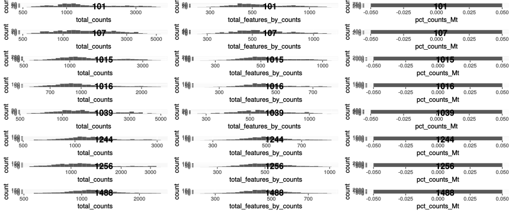

Kang dataset
Almut Lütge
2 März 2020
Kang dataset
10x droplet-based scRNA-seq PBMC data from 8 Lupus patients before and after 6h-treatment with INF-beta (16 samples in total). data are derived from the muscData package and can be assessed via ExperimentHub. Here we use only the control sample to not mix treatment and batch effect. See https://bioconductor.org/packages/release/data/experiment/vignettes/muscData/inst/doc/muscData.html.
suppressPackageStartupMessages({
library(plotly)
library(readr)
library(stringr)
library(edgeR)
library(stringr)
library(pheatmap)
library(purrr)
library(scater)
library(dplyr)
library(reshape2)
library(ggplot2)
library(cowplot)
library(Matrix)
library(scran)
library(LSD)
library(Seurat)
library(sctransform)
library(readxl)
library(DropletUtils)
library(CellMixS)
library(tibble)
library(ExperimentHub)
})
seed <- 1000Data
Load data
out_path <- here::here("out")
sc <- ExperimentHub()## snapshotDate(): 2019-10-22sce <- sc[["EH2259"]]## snapshotDate(): 2019-10-22## see ?muscData and browseVignettes('muscData') for documentation## loading from cache## Filter out genes that are not expressed in any cell
sce <- sce[which(rowSums(counts(sce) > 0) > 0), ]
sce$patient <- sce$ind
sce$patient <- factor(sce$patient)
table(sce$patient)##
## 101 107 1015 1016 1039 1244 1256 1488
## 2390 1286 5841 4178 1349 4005 4726 5290table(sce$patient, sce$stim)##
## ctrl stim
## 101 1027 1363
## 107 645 641
## 1015 3138 2703
## 1016 2180 1998
## 1039 552 797
## 1244 2250 1755
## 1256 2451 2275
## 1488 2376 2914dim(sce)## [1] 18890 29065dim(colData(sce))## [1] 29065 6dim(rowData(sce))## [1] 18890 2#remove stmulated sample
sce <- sce[,!sce$stim %in% "stim"]
dim(sce)## [1] 18890 14619#remove doublets
sce <- sce[,!sce$multiplets %in% "doublet"]
dim(sce)## [1] 18890 13021Calculate QC
#remove genes without any counts
keep_features <- rowSums(counts(sce) > 0) > 0
sce <- sce[keep_features, ]
dim(sce)## [1] 17294 13021# # Mitochondrial genes
is.mito <- grepl("MT-", rownames(sce))
summary(is.mito)## Mode FALSE
## logical 17294mito <- rownames(sce)[is.mito]
sce <- calculateQCMetrics(sce, feature_controls = list(Mt = mito))## Warning: 'calculateQCMetrics' is deprecated.
## Use 'perCellQCMetrics' or 'perFeatureQCMetrics' instead.Filtering
Find outlier
# # Plot filters
plotFilters <- function( sce, var="log10_total_counts", split_by="patient", nrow=NULL,
nmads=c(2,3,5), lt=c("dashed","dotted","dotdash"), xscale="free" ){
CD <- as.data.frame(colData(sce))
if(!(var %in% colnames(CD))) stop(paste("`var`",var,"is not in `colData(sce)`!"))
if(!is.null(split_by) && !(split_by %in% colnames(CD))){
stop(paste("`split_by`",split_by,"is not in `colData(sce)`!"))
}
library(ggplot2)
library(cowplot)
d <- CD[,var,drop=F]
if(!is.null(split_by)) d$dataset <- CD[[split_by]]
p <- ggplot(d, aes_string(x=var)) + geom_histogram(color="darkblue", bins=30)
if(xscale!="free"){
if(xscale!="fixed"){
if(xscale>1 && xscale%%1==0){
xq <- .tmads(d[[var]], xscale)
xr <- range(d[[var]],na.rm=T)
xq <- c(max(xq[1],xr[1]), min(xq[2],xr[2]))
}else{
if(xscale<=1 & xscale>0){
xscale <- (1-xscale)/2
xq <- quantile(d[[var]], probs=c(xscale,1-xscale), na.rm=T)
}else{
stop("Wrong `xscale` value!")
}
}
p <- p + xlim(xq[1], xq[2])
}
}
if(!is.null(split_by)){
if(is.null(nrow)) nrow <- ceiling(length(unique(d$dataset))/3)
p <- p + facet_wrap(~dataset, scales=ifelse(xscale=="free","free","free_y"), nrow=nrow)
for(ds in unique(d$dataset)){
for(i in 1:length(nmads)){
ma <- .tmads(d[which(d$dataset==ds),var], nmads[i])
df2 <- data.frame(xint=as.numeric(ma), dataset=rep(ds,2))
p <- p + geom_vline(data=df2, aes(xintercept=xint), linetype=lt[i])
}
}
}else{
for(i in 1:length(nmads)){
df2 <- data.frame(xint=as.numeric(.tmads(d[[var]], nmads[i])))
p <- p + geom_vline(data=df2, aes(xintercept=xint), linetype=lt[i])
}
}
p
}
.tmads <- function(x, nbmads=2.5){
x2 <- nbmads*median(abs(x-median(x)))
median(x)+c(-x2,x2)
}
plotFilters(sce)
plotFilters(sce, "log10_total_features_by_counts")
plotFilters(sce, "pct_counts_Mt", xscale=0.98)## Warning: Removed 8 rows containing missing values (geom_bar).
# Find outlier
outlierPlot <- function(cd, feature, aph=NULL, logScale=FALSE, show.legend=TRUE){
if(is.null(aph)) aph <- paste0(feature, "_drop")
if(!(aph %in% colnames(cd))) aph <- NULL
p <- ggplot(as.data.frame(cd), aes_string(x = feature, alpha = aph)) +
geom_histogram(show.legend=show.legend)
if(!is.null(aph)) p <- p + scale_alpha_manual(values = c("TRUE" = 0.4, "FALSE" = 1))
if(logScale) p <- p + scale_x_log10()
p
}
plQCplot <- function(cd, show.legend=TRUE){
ps <- lapply(split(cd,cd$patient), sl=show.legend, FUN=function(x,sl){
list( outlierPlot( x, "total_counts", logScale=T, show.legend=sl),
outlierPlot( x, "total_features_by_counts", "total_features_drop",
logScale=T, show.legend=sl),
outlierPlot( x, "pct_counts_Mt", "mito_drop", show.legend=sl)
)
})
plot_grid( plotlist = do.call(c, ps),
labels=rep(basename(names(ps)), each=length(ps[[1]])),
ncol=length(ps[[1]]),
label_x=0.5 )
}
#Filtering
sce$total_counts_drop <- isOutlier(sce$total_counts, nmads = 2.5,
type = "both", log = TRUE, batch=sce$patient)
sce$total_features_drop <- isOutlier(sce$total_features_by_counts, nmads = 2.5,
type = "both", log = TRUE, batch=sce$patient)
sce$mito_drop <- sce$pct_counts_Mt > 5 &
isOutlier(sce$pct_counts_Mt, nmads = 2.5, type = "higher", batch=sce$patient)
sce$isOutlier <- sce$total_counts_drop | sce$total_features_drop | sce$mito_drop
# quality plot
plQCplot(colData(sce), show.legend=FALSE)## `stat_bin()` using `bins = 30`. Pick better value with `binwidth`.
## `stat_bin()` using `bins = 30`. Pick better value with `binwidth`.
## `stat_bin()` using `bins = 30`. Pick better value with `binwidth`.
## `stat_bin()` using `bins = 30`. Pick better value with `binwidth`.
## `stat_bin()` using `bins = 30`. Pick better value with `binwidth`.
## `stat_bin()` using `bins = 30`. Pick better value with `binwidth`.
## `stat_bin()` using `bins = 30`. Pick better value with `binwidth`.
## `stat_bin()` using `bins = 30`. Pick better value with `binwidth`.
## `stat_bin()` using `bins = 30`. Pick better value with `binwidth`.
## `stat_bin()` using `bins = 30`. Pick better value with `binwidth`.
## `stat_bin()` using `bins = 30`. Pick better value with `binwidth`.
## `stat_bin()` using `bins = 30`. Pick better value with `binwidth`.
## `stat_bin()` using `bins = 30`. Pick better value with `binwidth`.
## `stat_bin()` using `bins = 30`. Pick better value with `binwidth`.
## `stat_bin()` using `bins = 30`. Pick better value with `binwidth`.
## `stat_bin()` using `bins = 30`. Pick better value with `binwidth`.
## `stat_bin()` using `bins = 30`. Pick better value with `binwidth`.
## `stat_bin()` using `bins = 30`. Pick better value with `binwidth`.
## `stat_bin()` using `bins = 30`. Pick better value with `binwidth`.
## `stat_bin()` using `bins = 30`. Pick better value with `binwidth`.
## `stat_bin()` using `bins = 30`. Pick better value with `binwidth`.
## `stat_bin()` using `bins = 30`. Pick better value with `binwidth`.
## `stat_bin()` using `bins = 30`. Pick better value with `binwidth`.
## `stat_bin()` using `bins = 30`. Pick better value with `binwidth`.
ggplot(colData(sce) %>% as.data.frame, aes(x=total_features_by_counts, y=total_counts, colour=pct_counts_Mt)) + geom_point() + facet_wrap(~patient) +geom_density_2d(col="white") + scale_x_sqrt() + scale_y_sqrt()
ggplot(colData(sce) %>% as.data.frame, aes(x=total_features_by_counts, y=pct_counts_Mt)) + geom_point() + facet_wrap(~patient) +geom_density_2d(col="white")## Warning: Computation failed in `stat_density2d()`:
## bandwidths must be strictly positive## Warning: Computation failed in `stat_density2d()`:
## bandwidths must be strictly positive
## Warning: Computation failed in `stat_density2d()`:
## bandwidths must be strictly positive
## Warning: Computation failed in `stat_density2d()`:
## bandwidths must be strictly positive
## Warning: Computation failed in `stat_density2d()`:
## bandwidths must be strictly positive
## Warning: Computation failed in `stat_density2d()`:
## bandwidths must be strictly positive
## Warning: Computation failed in `stat_density2d()`:
## bandwidths must be strictly positive
## Warning: Computation failed in `stat_density2d()`:
## bandwidths must be strictly positive
Check thresholds
# Check outlier
mets <- c("total_counts_drop","total_features_drop","mito_drop")
sapply(mets, FUN=function(x){ sapply(mets, y=x, function(x,y){ sum(sce[[x]] & sce[[y]]) }) })## total_counts_drop total_features_drop mito_drop
## total_counts_drop 722 535 0
## total_features_drop 535 845 0
## mito_drop 0 0 0nbcells <- cbind(table(sce$patient),table(sce$patient[!sce$isOutlier]))
colnames(nbcells) <- c("cells total","cells after filtering")
nbcells## cells total cells after filtering
## 101 902 873
## 107 556 547
## 1015 2822 2687
## 1016 1888 1686
## 1039 490 409
## 1244 2018 1816
## 1256 2181 2010
## 1488 2164 1961layout(matrix(1:2,nrow=1))
LSD::heatscatter( sce$total_counts, sce$total_features_by_counts, xlab="Total counts", ylab="Non-zero features", main="",log="xy")
w <- which(!sce$isOutlier)
LSD::heatscatter( sce$total_counts[w], sce$total_features_by_counts[w], xlab="Total counts", ylab="Non-zero features", main="Filtered cells",log="xy")
# summary of cells kept
cct <- table(sce$isOutlier, sce$patient)
row.names(cct) <- c("Kept", "Filtered out")
cct##
## 101 107 1015 1016 1039 1244 1256 1488
## Kept 873 547 2687 1686 409 1816 2010 1961
## Filtered out 29 9 135 202 81 202 171 203# drop outlier cells
sce <- sce[,!sce$isOutlier]
# require count > 1 in at least 20 cells
sce <- sce[which(rowSums(counts(sce)>1)>=20),]
dim(sce)## [1] 3757 11989plQCplot(colData(sce), show.legend=FALSE)## `stat_bin()` using `bins = 30`. Pick better value with `binwidth`.
## `stat_bin()` using `bins = 30`. Pick better value with `binwidth`.
## `stat_bin()` using `bins = 30`. Pick better value with `binwidth`.
## `stat_bin()` using `bins = 30`. Pick better value with `binwidth`.
## `stat_bin()` using `bins = 30`. Pick better value with `binwidth`.
## `stat_bin()` using `bins = 30`. Pick better value with `binwidth`.
## `stat_bin()` using `bins = 30`. Pick better value with `binwidth`.
## `stat_bin()` using `bins = 30`. Pick better value with `binwidth`.
## `stat_bin()` using `bins = 30`. Pick better value with `binwidth`.
## `stat_bin()` using `bins = 30`. Pick better value with `binwidth`.
## `stat_bin()` using `bins = 30`. Pick better value with `binwidth`.
## `stat_bin()` using `bins = 30`. Pick better value with `binwidth`.
## `stat_bin()` using `bins = 30`. Pick better value with `binwidth`.
## `stat_bin()` using `bins = 30`. Pick better value with `binwidth`.
## `stat_bin()` using `bins = 30`. Pick better value with `binwidth`.
## `stat_bin()` using `bins = 30`. Pick better value with `binwidth`.
## `stat_bin()` using `bins = 30`. Pick better value with `binwidth`.
## `stat_bin()` using `bins = 30`. Pick better value with `binwidth`.
## `stat_bin()` using `bins = 30`. Pick better value with `binwidth`.
## `stat_bin()` using `bins = 30`. Pick better value with `binwidth`.
## `stat_bin()` using `bins = 30`. Pick better value with `binwidth`.
## `stat_bin()` using `bins = 30`. Pick better value with `binwidth`.
## `stat_bin()` using `bins = 30`. Pick better value with `binwidth`.
## `stat_bin()` using `bins = 30`. Pick better value with `binwidth`.
table(sce$patient)##
## 101 107 1015 1016 1039 1244 1256 1488
## 873 547 2687 1686 409 1816 2010 1961Save data
# Save data
saveRDS(sce, file = paste0(out_path, "/sce_kang.rds"))sessionInfo()## R version 3.6.1 (2019-07-05)
## Platform: x86_64-pc-linux-gnu (64-bit)
## Running under: Ubuntu 16.04.6 LTS
##
## Matrix products: default
## BLAS: /home/aluetg/R/lib/R/lib/libRblas.so
## LAPACK: /home/aluetg/R/lib/R/lib/libRlapack.so
##
## locale:
## [1] LC_CTYPE=en_US.UTF-8 LC_NUMERIC=C
## [3] LC_TIME=en_US.UTF-8 LC_COLLATE=en_US.UTF-8
## [5] LC_MONETARY=en_US.UTF-8 LC_MESSAGES=en_US.UTF-8
## [7] LC_PAPER=en_US.UTF-8 LC_NAME=C
## [9] LC_ADDRESS=C LC_TELEPHONE=C
## [11] LC_MEASUREMENT=en_US.UTF-8 LC_IDENTIFICATION=C
##
## attached base packages:
## [1] parallel stats4 stats graphics grDevices utils datasets
## [8] methods base
##
## other attached packages:
## [1] muscData_1.0.0 ExperimentHub_1.12.0
## [3] AnnotationHub_2.18.0 BiocFileCache_1.10.2
## [5] dbplyr_1.4.2 tibble_2.1.3
## [7] CellMixS_1.2.3 kSamples_1.2-9
## [9] SuppDists_1.1-9.5 DropletUtils_1.6.1
## [11] readxl_1.3.1 sctransform_0.2.1
## [13] Seurat_3.1.4 LSD_4.0-0
## [15] scran_1.14.6 Matrix_1.2-18
## [17] cowplot_1.0.0 reshape2_1.4.3
## [19] dplyr_0.8.4 scater_1.14.6
## [21] SingleCellExperiment_1.8.0 SummarizedExperiment_1.16.1
## [23] DelayedArray_0.12.2 BiocParallel_1.20.1
## [25] matrixStats_0.55.0 Biobase_2.46.0
## [27] GenomicRanges_1.38.0 GenomeInfoDb_1.22.0
## [29] IRanges_2.20.2 S4Vectors_0.24.3
## [31] BiocGenerics_0.32.0 purrr_0.3.3
## [33] pheatmap_1.0.12 edgeR_3.28.1
## [35] limma_3.42.2 stringr_1.4.0
## [37] readr_1.3.1 plotly_4.9.2
## [39] ggplot2_3.2.1
##
## loaded via a namespace (and not attached):
## [1] reticulate_1.14 R.utils_2.9.2
## [3] tidyselect_1.0.0 AnnotationDbi_1.48.0
## [5] RSQLite_2.2.0 htmlwidgets_1.5.1
## [7] grid_3.6.1 Rtsne_0.15
## [9] munsell_0.5.0 codetools_0.2-16
## [11] mutoss_0.1-12 ica_1.0-2
## [13] statmod_1.4.34 future_1.16.0
## [15] withr_2.1.2 colorspace_1.4-1
## [17] knitr_1.28 ROCR_1.0-7
## [19] gbRd_0.4-11 listenv_0.8.0
## [21] labeling_0.3 Rdpack_0.11-1
## [23] GenomeInfoDbData_1.2.2 mnormt_1.5-6
## [25] farver_2.0.3 bit64_0.9-7
## [27] rhdf5_2.30.1 rprojroot_1.3-2
## [29] vctrs_0.2.3 TH.data_1.0-10
## [31] xfun_0.12 R6_2.4.1
## [33] ggbeeswarm_0.6.0 rsvd_1.0.3
## [35] locfit_1.5-9.1 bitops_1.0-6
## [37] assertthat_0.2.1 promises_1.1.0
## [39] scales_1.1.0 multcomp_1.4-12
## [41] beeswarm_0.2.3 gtable_0.3.0
## [43] npsurv_0.4-0 globals_0.12.5
## [45] sandwich_2.5-1 rlang_0.4.5
## [47] splines_3.6.1 lazyeval_0.2.2
## [49] BiocManager_1.30.10 yaml_2.2.1
## [51] backports_1.1.5 httpuv_1.5.2
## [53] tools_3.6.1 gplots_3.0.3
## [55] RColorBrewer_1.1-2 ggridges_0.5.2
## [57] TFisher_0.2.0 Rcpp_1.0.3
## [59] plyr_1.8.5 zlibbioc_1.32.0
## [61] RCurl_1.98-1.1 pbapply_1.4-2
## [63] viridis_0.5.1 zoo_1.8-7
## [65] ggrepel_0.8.1 cluster_2.1.0
## [67] here_0.1 magrittr_1.5
## [69] data.table_1.12.8 lmtest_0.9-37
## [71] RANN_2.6.1 mvtnorm_1.1-0
## [73] fitdistrplus_1.0-14 xtable_1.8-4
## [75] mime_0.9 hms_0.5.3
## [77] patchwork_1.0.0 lsei_1.2-0
## [79] evaluate_0.14 gridExtra_2.3
## [81] compiler_3.6.1 KernSmooth_2.23-16
## [83] crayon_1.3.4 R.oo_1.23.0
## [85] htmltools_0.4.0 later_1.0.0
## [87] tidyr_1.0.2 RcppParallel_4.4.4
## [89] DBI_1.1.0 MASS_7.3-51.5
## [91] rappdirs_0.3.1 R.methodsS3_1.8.0
## [93] gdata_2.18.0 metap_1.3
## [95] igraph_1.2.4.2 pkgconfig_2.0.3
## [97] sn_1.5-5 numDeriv_2016.8-1.1
## [99] vipor_0.4.5 dqrng_0.2.1
## [101] multtest_2.42.0 XVector_0.26.0
## [103] bibtex_0.4.2.2 digest_0.6.25
## [105] RcppAnnoy_0.0.15 tsne_0.1-3
## [107] rmarkdown_2.1 cellranger_1.1.0
## [109] leiden_0.3.3 uwot_0.1.5
## [111] DelayedMatrixStats_1.8.0 listarrays_0.3.0
## [113] curl_4.3 shiny_1.4.0
## [115] gtools_3.8.1 lifecycle_0.1.0
## [117] nlme_3.1-144 jsonlite_1.6.1
## [119] Rhdf5lib_1.8.0 BiocNeighbors_1.4.2
## [121] viridisLite_0.3.0 pillar_1.4.3
## [123] lattice_0.20-40 fastmap_1.0.1
## [125] httr_1.4.1 plotrix_3.7-7
## [127] survival_3.1-8 interactiveDisplayBase_1.24.0
## [129] glue_1.3.1 png_0.1-7
## [131] BiocVersion_3.10.1 bit_1.1-15.2
## [133] stringi_1.4.6 HDF5Array_1.14.3
## [135] blob_1.2.1 BiocSingular_1.2.2
## [137] caTools_1.18.0 memoise_1.1.0
## [139] irlba_2.3.3 future.apply_1.4.0
## [141] ape_5.3